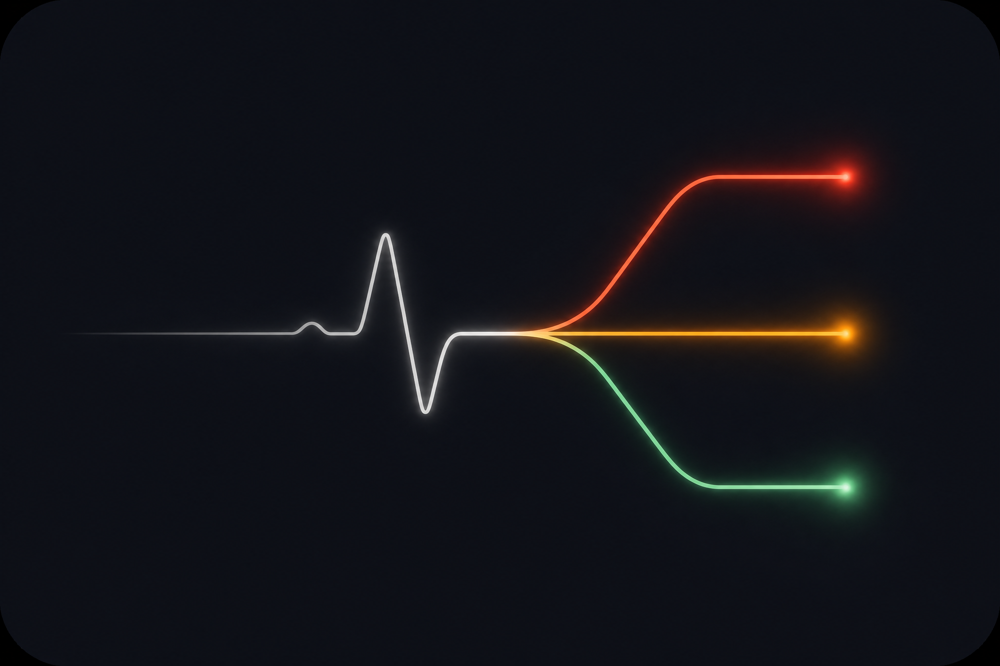

Ingest
Email, Classroom, files, and WhatsApp-shaped updates arrive in one place.

TriageSTUDENT ATTENTION, TRIAGED
Triage gathers what college sends across your channels, explains what matters, and keeps the final decision with you.
Interactive demo available now · Production integrations shown with honest status
ONE INTAKE, THREE CLEAR PATHS
Email, Classroom, files, and WhatsApp-shaped updates arrive in one place.
Triage separates obligations, study material, and noise with the evidence it found.
Deadlines are prioritized, study topics are ranked, and nothing leaves without your approval.
THE STUDENT DESK, EXPLAINED
ACTION QUEUE
See what is immediate, what can wait, and what is mandatory before you miss it.
Available in demoSTUDY PLAN
Compare material, rank recurring topics, and get outlines—not generated answers.
Available in demoHUMAN REVIEW
Review mark-done requests and copy/edit poll or form drafts before sending anything yourself.
Available in demoCONNECTED SOURCES
Gmail and Classroom use read-only OAuth locally; files work in the demo; WhatsApp uses representative demo data.
Local integration / demo dataAGENCY BY DESIGN
Read-only by default. Triage reviews sources; it does not silently send or submit.
Human approval before action. The student approves a change or copies a draft themselves.
Built for learning. Assignment help provides structure and checks, never a completed submission.
NOW · NEXT · PRODUCTION
Classification, queue, study planning, scaffolding, reminders, and review-first drafts.
Per-user Google OAuth and durable storage designed for a hosted web experience.
Real WhatsApp bridge, secure source sync, notifications, and staged routine-form assistance.
SEE THE CURRENT BUILD
Explore the working demo, then judge Triage by the decisions it helps you make.
LOCAL-FIRST STUDENT DESK
Sort what needs action, study, or a quick human decision.
STREAM / INGEST
Paste a college message or upload a UTF-8 .txt file.
CONNECTED SOURCES
Connections stay on this device.
ACTION QUEUE
STUDY PLAN
Upload a question bank and its unit notes. Triage returns a topic outline, never full answers.
ASSIGNMENT SCAFFOLD
Paste an assignment prompt for requirements, concepts, an approach outline, and self-checking test cases.
SAVED SCAFFOLDS